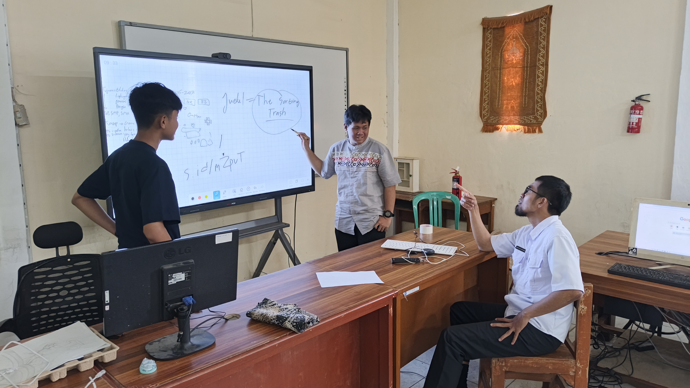
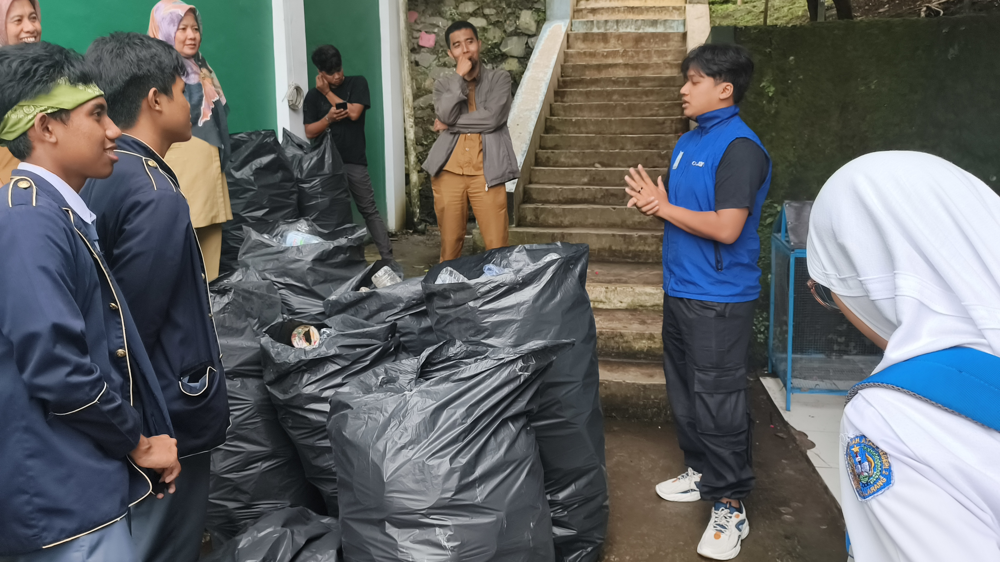

Dokumentasi Projek

25 Februari 2026
Penjaringan Ide
Kami memulai dengan menganalisis data timbulan sampah di Kabupaten Bandung Barat dan mengidentifikasi rendahnya tingkat pemilahan sampah di kalangan pelajar sekolah menengah.

27 Februari 2026
Mempelajari Coding
Proses pembuatan aset visual dan coding mekanik permainan menggunakan HTML5 and JavaScript. Fokus utama adalah menciptakan antarmuka yang ceria dan intuitif bagi pengguna.

25 April 2026
Green Talk Show
Mengintegrasikan materi pemilahan sampah organik, anorganik, dan B3

4 Mei 2026
Wawancara bank duitin
Melakukan Kolaborasi dengan Bank Duitin.

13 Mei 2026
Wawancara DLH
Memperkenalkan game "Sort The Trash" Kepada Dinas Lingkungan Hidup

18 Mei 2026
Penerapan Inovasi
menerapkan inovasi game "Sort The Trash" kepada Sekolah Adiwiyata SMPN 2 PADALARANG